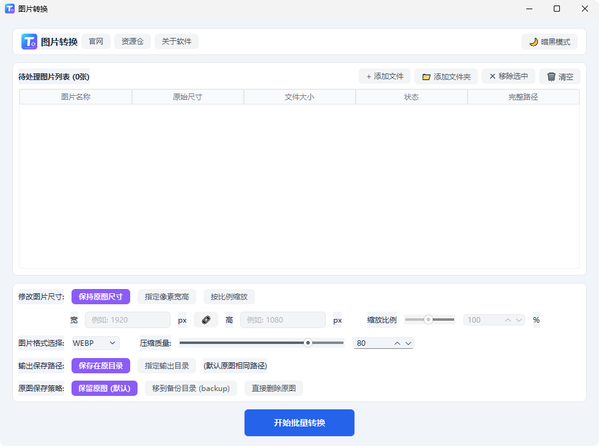
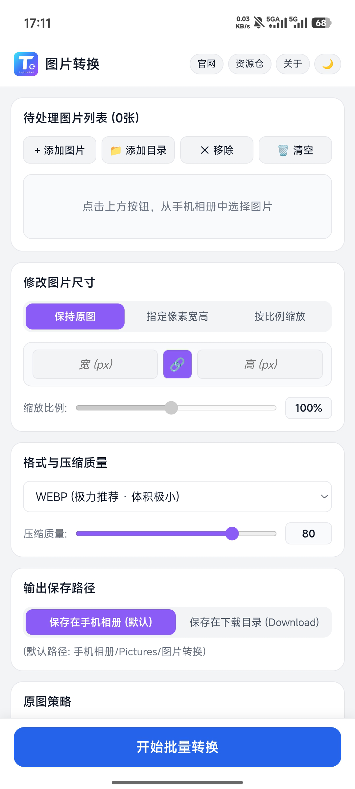

🟢 绿色免安装
🛡️ 100% 本地离线处理
🎁 永久免费无套路
🚫 无广告·无捆绑
轻快、纯粹，为效率而生的
本地图片批量转换工具
无需繁琐安装，开箱即用。轻松解决多图片格式互转、尺寸智能缩放与画质微调，守护您的核心图片数据安全。
Windows 客户端
绿色便携包Android 客户端
原生 APKDesktop Experience
电脑端：为桌面生产力深度优化
专为键盘鼠标操作打磨的大屏幕高效布局，从容应对海量图片处理。
图片转换 (k资源仓) - 桌面端

多核心高速批处理
支持一键拖拽数千张图片或整目录递归导入，充分调用本地多核心 CPU，多任务排队瞬间完成。
像素级精准尺寸控制
支持自由指定宽高像素，配备一键「比例锁定」链条，防止画面拉伸变形；亦可自由按百分比等比缩放。
备份安全机制 (后悔药)
支持自动生成 backup 备份文件夹存放原图，转换后的新文件独立输出，让桌面归档井然有序。
原生级暗黑模式
完美契合 Windows 11 深色主题，长时间批量处理与归档不刺眼，专注提升工作流效率。
Mobile Experience
手机端：随身携带的相册瘦身利器
专为触屏优化的单手流线型操作，随时随地转换分享。
触控交互极简直觉
一键调起系统相册或指定文件夹，支持批量点选与快速移除，大按钮防误触，单手即可轻松搞定。
系统相册智能归类
默认保存至 手机相册/Pictures/图片转换 或 Download 目录，转换完毕打开系统相册立即可见。
轻巧省电无后台偷跑
基于 Android 9.0+ 深度优化，安装包极小，转码完成后立即释放内存，不常驻后台，不消耗多余电量。
无网络离线转码保护隐私
无需消耗任何手机蜂窝流量，高铁无信号或飞行模式下均能顺畅使用，个人自拍与证件照绝无外泄风险。

Pure & Safe
拒绝臃肿，回归工具本质
把隐私和掌控权还给用户，打造纯粹干净的本地生产力利器。
纯本地离线处理
所有格式转码与压缩均在本地计算机中计算，数据 0 上传，照片与商业设计稿私密无忧。
绿色免安装即用
下载解压直接运行，不写多余注册表与开机自启。装进 U 盘，随时随地随插即用。
零广告无弹窗
没有烦人的弹窗提醒、没有捆绑软件、没有诱导付费，启动极速，心无旁骛。
永久免费开放
不限转换数量、不限制图片分辨率上限、无隐藏付费水印，面向所有用户免费开放。
FAQ
常见问题解答
关于软件的使用与安全性说明。
转换过程中需要连接互联网吗？
完全不需要。软件的所有核心转码与尺寸缩放库均封装在本地程序内，拔掉网线或离线状态下同样可以满速运行。
软件真的完全免费且不限制转换张数吗？
是的。无论是 1 张、100 张还是上千张图片，均可一次性加入队列批量完成，无隐藏付费，无数量门槛。
Windows 首次打开提示“未知发布者”或安全拦截怎么办？
由于个人开发的绿色便携软件未采购昂贵的企业签名证书，Windows SmartScreen 可能会产生常规拦截提示。点击「更多信息」并选择「仍要运行」即可正常开启，软件保证无任何后门与病毒行为。
后续有新版本时，该如何更新？
软件为绿色便携版本，未来发布新版本只需在本页面下载最新的绿色包，解压覆盖旧文件即可完成更新。
更新记录
持续迭代中，欢迎反馈建议
v1.0.x — 新版本优化中
持续迭代中
优化大批量图片转换时的内存开销，提升极端多图场景下的转码稳定性
优化移动端 Android 界面在全面屏与手势导航下的边距与触控体验
收集首发版本用户反馈，持续修复已知交互细节与边界兼容性问题
v1.0.0 — 图片转换工具诞生
首发正式版
纯本地离线处理：所有转码均在本地硬件执行，数据 0 上传，彻底保护个人与商业图像隐私
绿色便携无广告：单文件即下即用，不写入无关注册表，零弹窗、零诱导推广
主流多格式互转：深度支持 WebP、PNG、JPG/JPEG 等现代主流格式双向高速转码
图片质量自由选择：提供 1~100 无级质量滑块调节，精准平衡图像体积与清晰度
3 大尺寸重塑模式：支持保持原图尺寸、指定像素宽高（配备比例锁定）及百分比自由缩放
输出路径与原图策略：支持保存至原目录或指定目录；原图支持保留、自动移至 backup 备份或直接清理
现代极简界面：扁平无多余层级设计，内置一键「暗黑模式」，夜间批量处理护眼更舒适
双端首发覆盖：同步发布 Windows 10/11 (64-bit) 桌面版 与 Android 9.0+ 移动版